Addressing Modes#

Introduction#
In this week’s lecture, you will learn more about assembly language and the diverse ways to access data dependent on what it is and where it is stored. This is based around what is known as addressing modes. There are different ways in which an operand may be specified in an instruction depending on what it is and where it is located. Some operations require no operands and the data to be operated on is implied, in other cases operands can be constants, variables, arrays and memory locations all of which are accessed differently.

Topics discussed#
In this section we will review a number of different addressing modes relevant to the Atmel ATMega328 Microcontroller including, inherent, immediate, direct, indirect and relative.
Contents#
What is an addressing mode?#
An addressing mode is a way in which an operand is specified in an instruction and defines how the CPU finds it.
There are different ways in which an operand may be specified in an instruction depending on what it is and where it is located.
Some operations require no operands and the data to be operated on is implied, in other cases operands can be constants, variables, arrays and memory locations – this is where addressing modes are used.
The six addressing modes found in the AVR architecture used by the Atmel ATmega328 family of processors are summarised in Fig. 103.
{kind=link}
Fig. 103 The six addressing modes of an AVR processor.#
The memory address where data is stored is called the effective address of the operand and the addressing mode refers to the way in which the operand is specified and how the CPU accesses it.
Addressing modes are an aspect of the instruction set architecture in most central processing unit (CPU) designs. The various addressing modes that are defined in a given instruction set architecture define how the machine language instructions in that architecture identify the operand(s) of each instruction. An addressing mode specifies how to calculate the effective memory address of an operand by using information held in registers and/or constants contained within a machine instruction or elsewhere.
Addressing modes on the Atmel ATmega328#
The AVR® Enhanced RISC microcontroller supports powerful and efficient addressing modes for access to the program memory (Flash) and Data memory (SRAM, Register file, I/O Memory, and Extended I/O Memory).
The Atmel ATmega328 microcontroller makes use of the following addressing modes:
Inherent/Implied Addressing
Register Direct (single and two-register) Addressing
I/O Direct Addressing
Data Direct Addressing
Immediate Addressing
Data Indirect Addressing
Relative Addressing
Program Addressing (Not covered)
Apart from program addressing, we will discuss each of these addressing modes in the followin.g
Inherent Addressing Mode#
For instructions that use inherent addressing, sometimes called implicit or implied addressing, the operands are not explicitly specified but are implied by the instruction[1].
Examples
SEN ; Set Negative Flag in Status Register (SREG)
CLN ; Clear Nagative Flag in Status Register (SREG)
NOP ; No Operation (do nothing for one clock cycle)
Since no additional clock cycles are required to fetch and move data around, this is the simplest and fastest addressing mode.
Some of the AVR instructions that use inherent addressing are listed in Table 15.
Mnemonic |
Operands |
Decription |
|---|---|---|
|
Clear Zero Flag |
|
|
Global Interrupt Enable |
|
|
Global Interrupy Disable |
|
|
Set Sign Bit |
|
|
Clear Sign Biy |
|
|
Set Two’s Complement Overflow |
|
|
Clear Two’s Complement Overflow |
|
|
SET T in SREG |
|
|
Clear T in SREG |
|
|
Set Half Carry Flag in SREG |
|
|
Clear Half Carry Flag in SREG |
Microcontrollers that have single accumulators in place of a bank of general-purpose registers often have more instructions that use inherent addressing such as CLRA, DECA, INCA.
Register Direct Addressing#
For these operators, the operands are contained in registers in the register file. There are single register operators which operates on and returns the result to the destination register, known as Rd[^rd].
Because the microcontroller can access the register file faster than memory, they are also fast instructions.
Single Register (Rd)#
For instructions that use single direct register addressing, the operand is contained in the destination register Rd as illustrated in Fig. 104.
{kind=link}
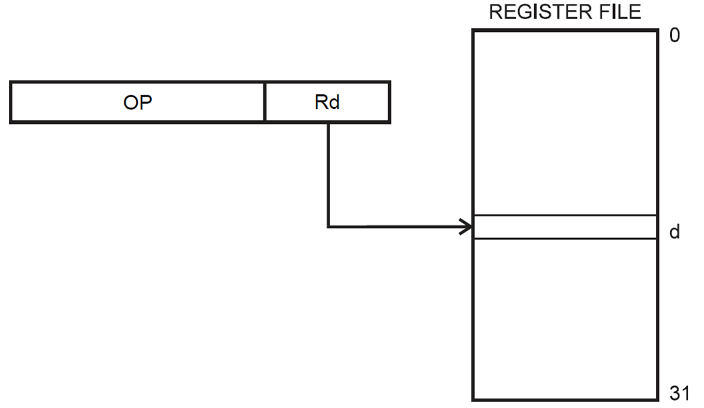
Fig. 104 Illustrating single register direct addressing: d is the register number and register d is source of the operand and the destination of the result.#
Examples
DEC R16 ;Decrement R16
INC R17 ;Increment R17
CLR R16 ;Clear R16
Note
Remember the operand represents the data so this addressing mode is accessing or acting on the data using only one of the general purpose registers but does not include any write back to SRAM/EEPROM.
Two Register (Rd, Rr)#
For instructions that use direct register addressing with two registers, the operand is **contained in the source and destination registers Rr and Rd respectively. The result of this that the data in Rd is overwritten . This is illustrated in Fig. 105.
{kind=link}
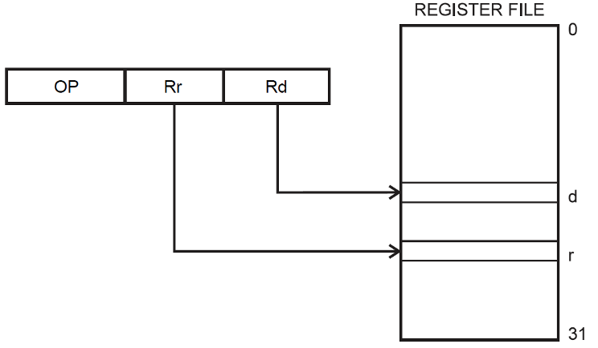
Fig. 105 Illustrating register direct addressing with two registers: d is the source of the first operand, r is the source of the second operand. The result overwrites the data in register d.#
Examples
ADD R16, R17 ;Add the contents of R16 and R17. Return sum to R16.
CP R16, R17 ;Compare the values of R16 and R17
MOV R16, R17 ;Copy contents of R17 into R16
Note
As with the previous addressing mode, this one is accessing or acting on the data in two of the general purpose registers and although it overwrites the data in Rd is also does not include any write back to SRAM/EEPROM.
I/O Direct Addressing#
Within the user data space there are 64 I/O registers as well as 160 Extended I/O registers. The first 64 of these can be accessed using instructions such as IN and OUT using I/O direct addressing mode. In I/O direct addressing mode the operands contain the address A of one of the lower 64 I/O locations and a source (Rr) or destination register (Rd). This is illustrated in Fig. 106.
{kind=link}
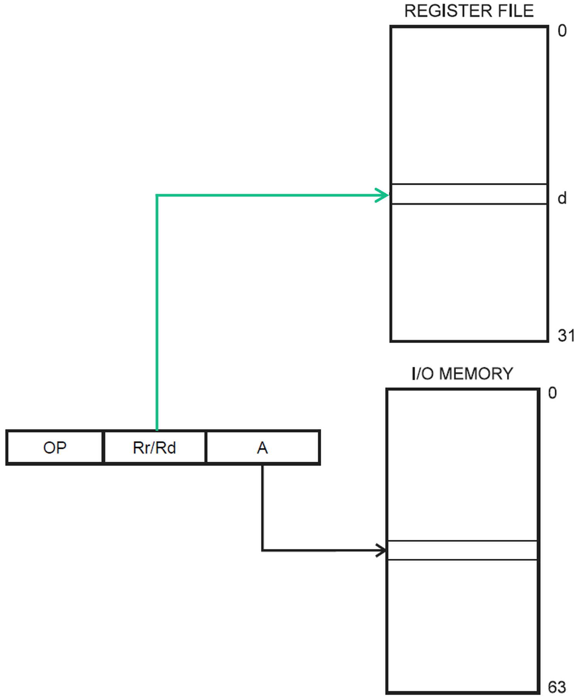
Fig. 106 Illustrating I/O direct addressing: the source (or destination) will be from an I/O register. The destination (or source) will be one of the general purpose registers.#
Examples[2]
IN R16, PIND ;Load (input) the contents of PIND into R16
OUT PORTC, R17 ;Store (output) the contents of R17 to PORTC
Note
Be aware that loading and storing data to these registers using instructions such as LD and ST must address these registers differently and does not use I/O direct addressing mode.
Data Direct Addressing#
Instructions that use direct data addressing are two words (32-bits) in length, the first operand, Rr/Rd is one of the general-purpose registers and the second is 16-bit Data Address contained in the 16 LSBs of the two-word instruction. This is illustrated in Fig. 107.
{kind=link}
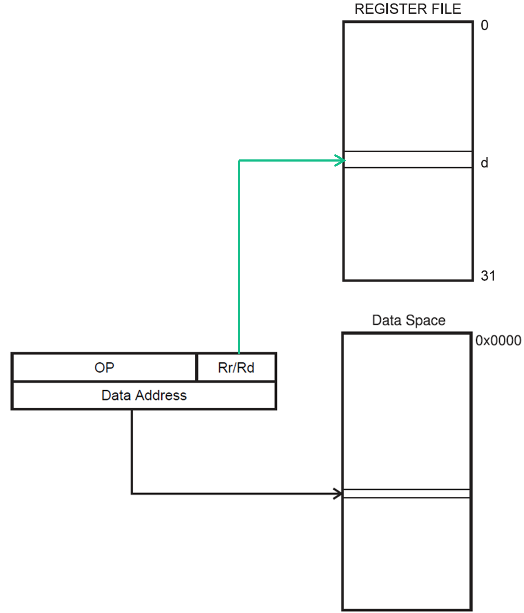
Fig. 107 Illustrating data direct addressing: the source (or destination) will be in memory. The destination (or source) will be one of the general purpose registers.#
Examples
LDS R16, 0x0100 ;Load the contents of data space address hex 0100 into R16
STS 0x0101, R17 ;Store the contents of R17 to data space address hex 0101
Immediate Addressing#
With instructions that use immediate addressing the actual data to be used is included within the instruction itself as a constant value[3]. This is illustrated in Fig. 108.
{kind=link}
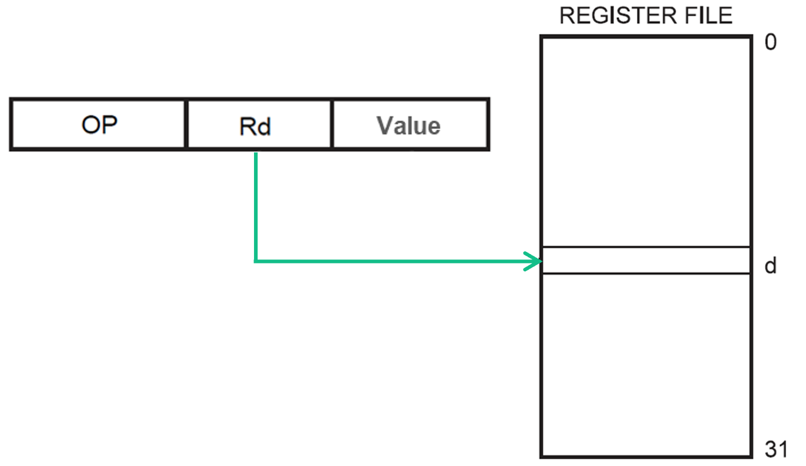
Fig. 108 Illustrating immediate addressing: the destination will be an one of the general purpose registers. The source will be a data value given in the instruction.#
Examples
LDI R16, 0x5B ;Load the hex value 5B into R16
SUBI R17, 24 ;Subtract the decimal value 24 from the contents of R17
Note
Since the instruction already contains the data, this is a fast addressing mode and only takes one clock cycle to complete.
Immediate vs Data Direct Addressing#
Instructions that use immediate addressing, take one clock-cycle to complete. For example LDI - load immediate:
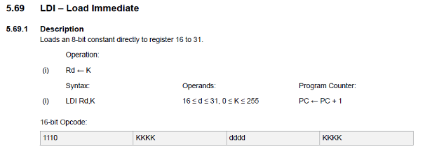
Instructions that use register or data direct addressing, take two clock-cycles to complete. For example LDS - load from store
needs to load the operator and decode the register address, then load data from the data space into the register.
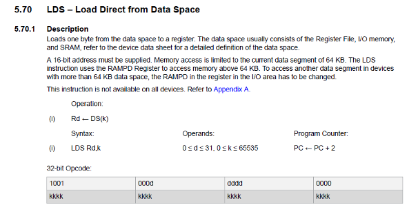
Indirect Data Addressing#
With instructions that use indirect data addressing the operand address is the contents of one of the X- Y- Z-pointer registers. This is illustrated in Fig. 109.
{kind=link}
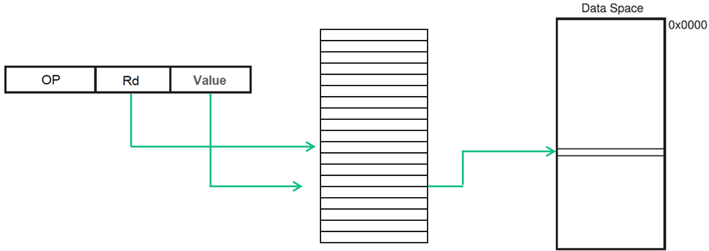
Fig. 109 Illustrating indirect direct addressing in which two registers provide the address in memory of the operand.#
Examples
LDS R26, 0x00
LDS R27, 0x10
LD R18, X ;Load R18 with data stored at the address in the X- pointer register
Note
This mode allows the address to be a run time computed value, whereas the direct address must be computed at compile time/assembly time/load time.
This has several important use cases including setting up storage for arrays or other structures in memory.
Indirect Data Addressing with Displacement#
As with indirect data addressing, the microcontroller makes use of the Y and/or Z pointers with an additional displacement to access data stored in the data space.
This is the best way to access an array of data and is illustrated in Fig. 110.
{kind=link}
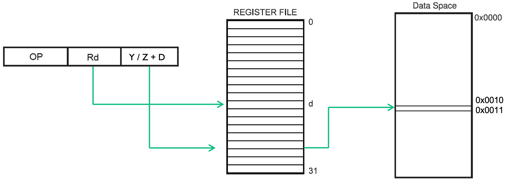
Fig. 110 Illustrating indirect direct addressing with displacement.#
Examples
LDS R28, 0x00
LDS R29, 0x10
LD R18, Y + 1 ;Load R18 with data stored at the address in the Y- pointer register with a displacement of 1
Note
This mode allows the address to be a run time computed value, whereas the direct address must be computed at compile time/assembly time/load time.
Indirect Data Addressing with Increment/Decrement#
Indirect Data Addressing mode also supports Post-increment and Pre-decrement addressing. W ith Data Indirect Addressing with Post-increment, the X-, Y-, or the Z-pointer is incremented after the operation. The operand address is the content of the X-, Y-, or the Z-pointer before incrementing.
With Data Indirect Addressing with Pre-decrement, the X,- Y-, or the Z-pointer is decremented before the operation. The operand address is the decremented contents of the X-, Y-, or the Z-pointer.
Examples
LD R16, Z+ ;Load R16 with data stored at the current address in the Z pointer register then increment the Z register
LD R16, -Z ;Load R16 with data stored at the current address in the Z pointer register - 1
Note
This mode is useful for iterating through arrays of or sequentially stored linked data.
Relative Addressing#
With relative program memory addressing the operand contains a signed 12-bit offset value which during execution is added to the program counter to change the flow of the program.
The destination of the branch (effective address) instruction is calculated by adding the signed byte following the opcode (-2048 to +2047) to the PC content. This is illustrated in Fig. 111.
{kind=link}
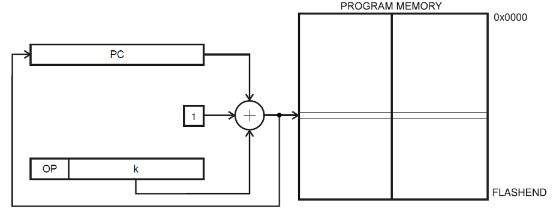
Fig. 111 Illustrating relative addressing which adjusts the program counter and is typically used for branching.#
Examples
RJMP Label ;Jump to the address specified by label
RCALL Label ;relative call to an address (subroutine)
Note
This addressing mode is used by instructions such as RJMP to modify the flow of a program, this typically is used in conjunction with test conditions or at the end of the code to make it loop back to the start.
Relative Addressing Example#
{kind=link}
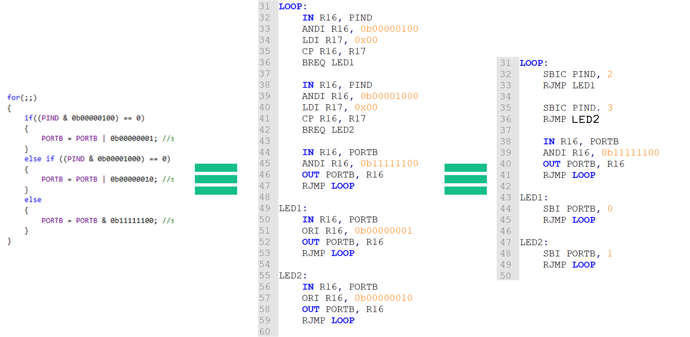
Fig. 112 An example to illustrate relative addressing#
{kind=link}
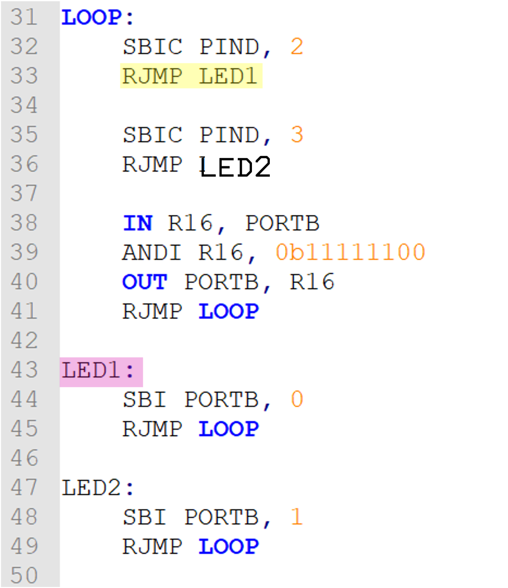
RJMP LED1
1100 kkkk kkkk kkkk
is
C006 = 1100 0000 0000 0110
RJMP +6
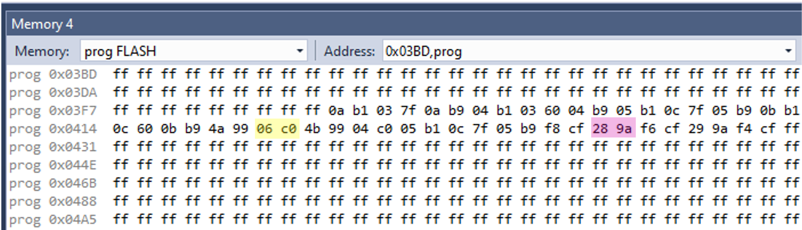
Summary#
In this section have reviewed different addressing modes supported by the AVR instruction set commenting on use cases and speed (in clock cycles) of their operation.
On Canvas#
You should review Section 3 of the AVR instructions set manual ([1]) on program and data addressing modes. There is a short quiz covering the content of this chapter.
In preparation for the class test next week, you should review all the content covered in these lecture notes, self-directed study material and the lab classes.
Note that the class test is closed-book but you have will access to the reference manuals mentioned in these notes.